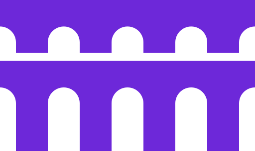
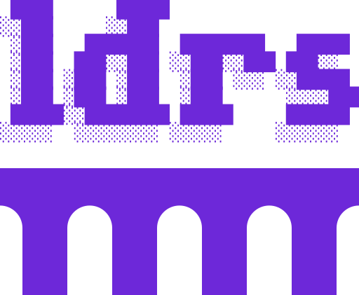
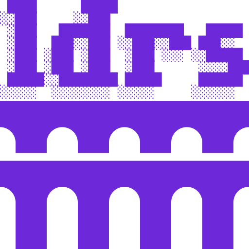

Three artifacts. All three share the same aqueduct geometry: column body 96, inter-tier gap 16 where applicable.
Standalone mark. Use for favicon (with letterboxing or square crop), in-page small marks, anywhere the wordmark is unwanted.

128Default lockup. Single-tier aqueduct under wordmark. Use for masthead, README banner, social cards.

256Square variant. Two-tier aqueduct, zero wordmark gap, inter-tier gap 16. Same column body as the icon. Use for app icons, GitHub avatars, anywhere a square is required.

256Same SVGs with fill changed to #FFFFFF. The figlet "shadow" survives the recolor because it's a glyph pattern, not a different fill. Demonstrated on royal violet (#6D28D9), royal violet dark (#8B5CF6), and dark gray (#1a1a1a).

icon
primary
square